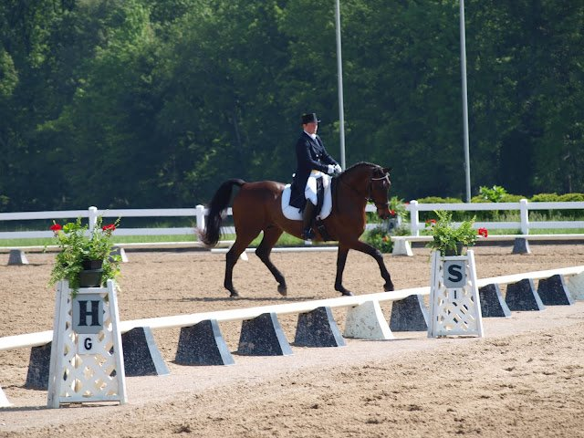
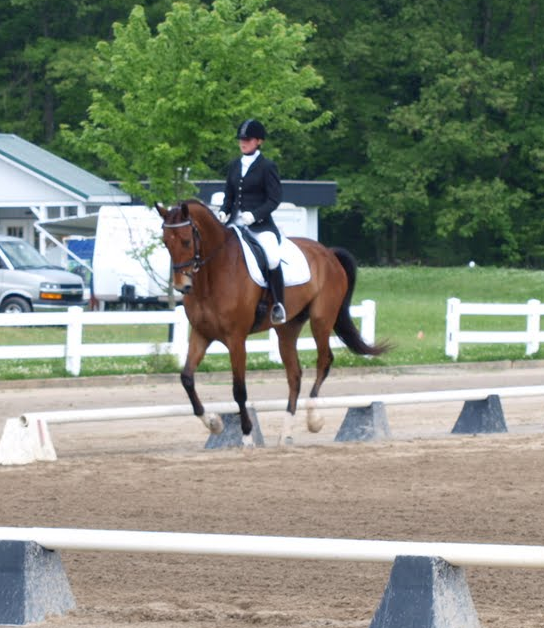
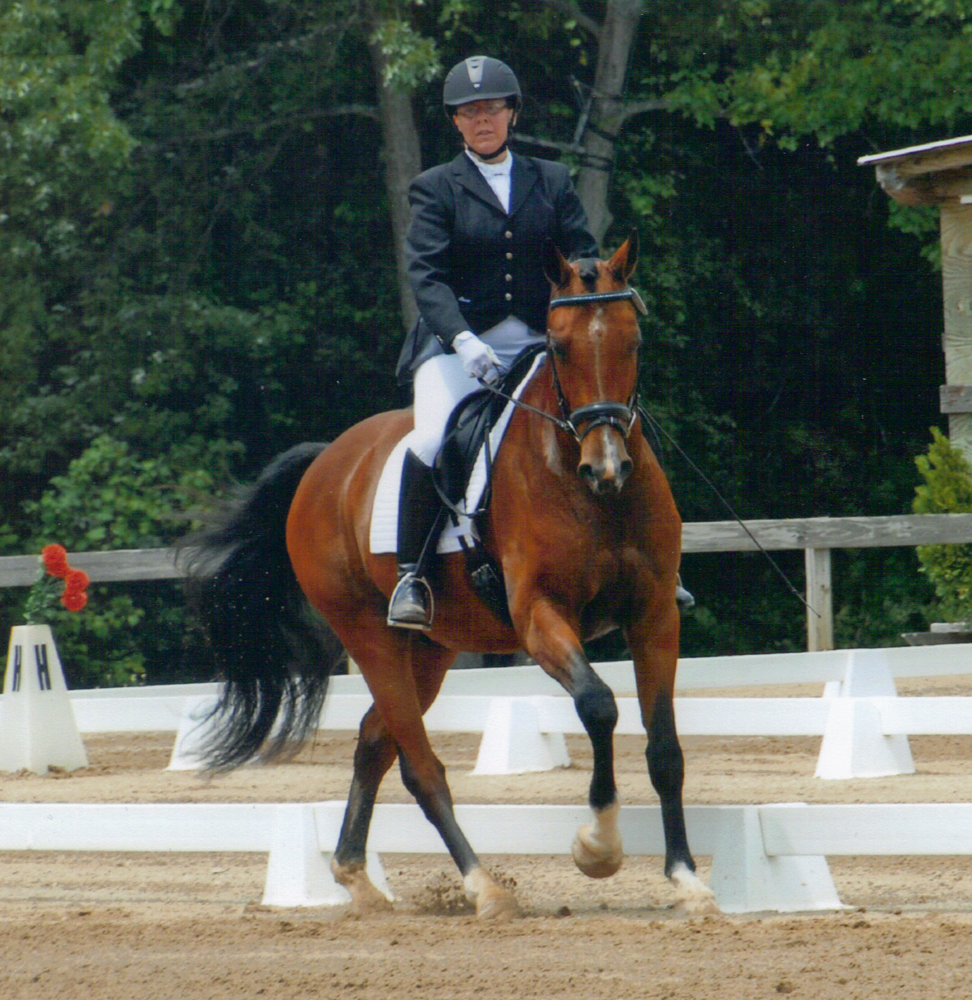
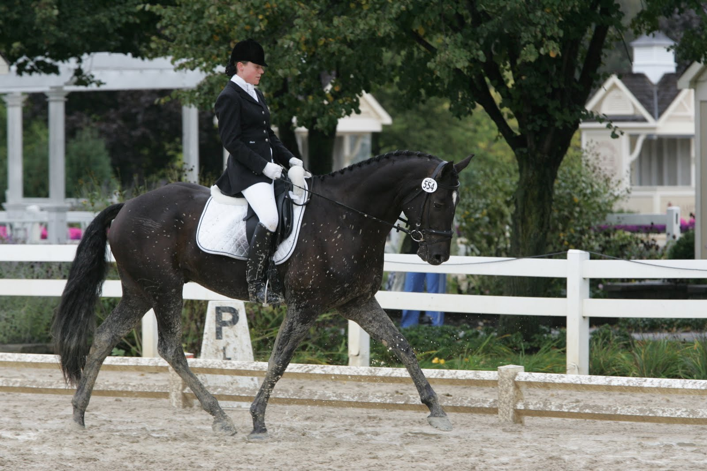
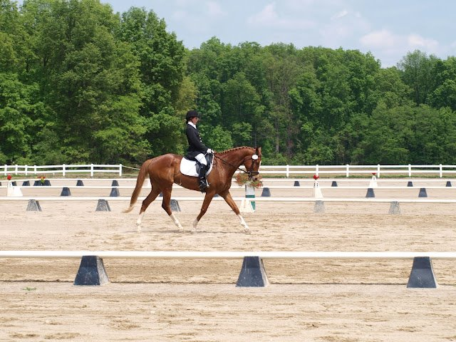
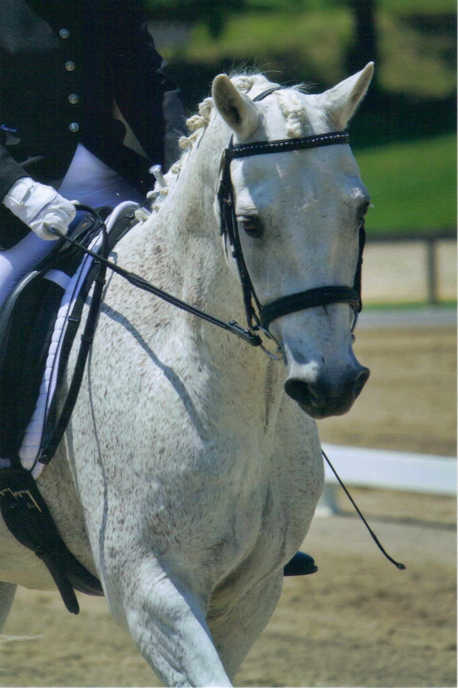

Breakthrough Dressage
Breakthrough Dressage
Horses
In TrainingCairoCairo is an 13 year old 17.0 hand Danish Warmblood gelding owned by Sharon Smith. He has shown through Intermediare I and is starting the Grand Prix work. Cairo is being leased and shown by Yr Johannsdottir. Last year Yr was able to earn her USDF Bronze medal on this wonderful schoolmaster. Cairo and Yr were Region 2 Reserve Champions at 3rd level last year with a score of 67% and placed 4th at Regionals in 4th level with a 65%. They were also Michigan Dressage Association adult amateur year end champions at 3rd and 4th level in 2011. This year she is showing him Prix St. Georges and hoping to earn her USDF Silver Medal. WradishWradish is a 6 YO, 18 hand Hungarian Warmblood gelding owned by Karen Farris. In 2011,  Jessie and Wradish were highly competitive at Training and First, and they won 2011 Michigan Dressage Association Training and First Level Champion.Jessie is showing him Second level in 2012, and he received a score of 66% in his first second level test in Batavia, OH. We look forward to the future with this talented gelding. TajEk Taj Mahal or "Taj" is an 8 year old Belgian Warmblood gelding owned by Michelle Davidge. In 2011, Michelle and Taj enjoyed their first show season together. Taj finished the season as the Reserve Champion Open division and Champion Amateur division in the Belgian Warmblood All-Breed Awards. They were also MDA Champions at Training level earning the Vi Hopkins Memorial Award for the highest scoring amateur competing at Training level.Michelle looks forward to showing this wonderful horse at 1st level in the upcoming season. EvitaEvita Rubin is a 13 year old, 16.2 hand Oldenburg Mare owned by Bonnie Winstead. A talented 4th level schoolmaster, Evita is helping Bonnie learn the fundamentals of dressage. CopperMy Lucky Copper Penny is a 19 year old, 13.2 hand pony gelding owned by Alexandra Hollenstine. ZoeZamara or "Zoe" is a 16.1 hand, 8 year old Desert Norman Mare owned by Bonnie Gorichan. This cross-discipline pair look forward to showing Training level dressage and Beginner Novice eventing this year. DanteLe Comandante PT or "Dante" is a handsome 7 year old Holsteiner gelding owned by Jessie. This talented horse is schooling 3rd level. Look for him in the show rings next year! RubyRuby Tuesday is a 3 year 16.2 hand Oldenburg filly by the Holsteiner stallion Reesling. Jessie is looking forward to starting this talented filly under saddle this year. SeraSerafina NF is a 6 year old, 16 hand Half-Andalusian Mare. Jessie looks forward to building the foundation of Sera's show career this year. DannyBreaking Daylight or "Danny" is a wonderful chestnut  Thoroughbred gelding owned by Grace Tsangaris. Grace and Danny recently made theirrecognized show debut at Majestic Farm. The pair earned their first qualifying score for 2012 regionals, congratulation Grace! This talented junior also competes at Novice level eventing. |
SchoolmastersProphetHideaway's Erin Prophet or "Prophet" is a 25 year old (but don't tell him that), 15 hand Connemara Pony Gelding owned by Jessie and available for lessons.  Prophet is trained through Second level and was successfully shown in 2010 by one of Jessie's students at Training and First level at recognized shows. Prophet is a valuable asset to our program; he is safe enough for a beginner or small child, yet talented and spry enough to help more advanced riders learn lateral movements and an introduction to collection. GreyAmazing Grey, known around the barn simply as "Grey" is a 21 year old Hannoverian gelding owned by Jessie and available for lessons. Grey is a talented Intermediare 1 schoolmaster and a valuable asset to our program. PetriePetrie is a 20 year old Trakehner-Arabian Cross gelding who was successfully shown by Jessie |
 This talented pair competed successfully at Training level in 2011, winning MDA Reserve Champion Junior. Allie also won the Ransom Memorial Perpetual Trophy for equitation. In 2012 Allie is looking forward to showing this talented pony 1st level.
This talented pair competed successfully at Training level in 2011, winning MDA Reserve Champion Junior. Allie also won the Ransom Memorial Perpetual Trophy for equitation. In 2012 Allie is looking forward to showing this talented pony 1st level.
 through Intermediare 1. Petrie's accomplishments include a Reserve Championship at Intermediare 1 at Sporthorse Nationals and multiple finishes in the ribbons at Regional Championships throughout his 12 year competitive career with Jessie. Petrie is currently teaching his leaser, Karen Farris, while Jessie brings along her young horse. Karen looks forward to showing Petrie this year as she begins her journey up the levels.
through Intermediare 1. Petrie's accomplishments include a Reserve Championship at Intermediare 1 at Sporthorse Nationals and multiple finishes in the ribbons at Regional Championships throughout his 12 year competitive career with Jessie. Petrie is currently teaching his leaser, Karen Farris, while Jessie brings along her young horse. Karen looks forward to showing Petrie this year as she begins her journey up the levels.